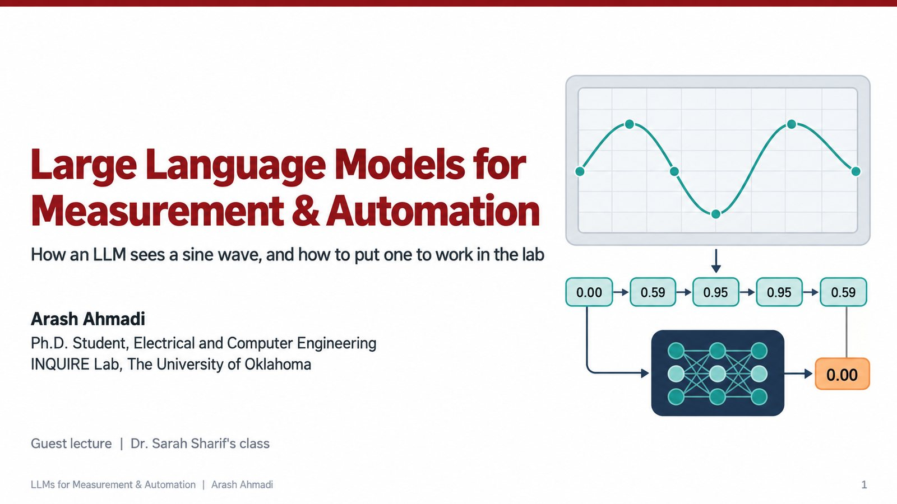

Large Language Models for Measurement & Automation
How an LLM sees a sine wave, and how to put one to work in the lab. A 45 minute guest lecture covering the math of language models, how they read measurement data, and how LLM agents can run instruments safely.
Arash Ahmadi, Ph.D. Student, Electrical and Computer Engineering · INQUIRE Lab, The University of Oklahoma · Guest lecture for Dr. Sarah Sharif's class
